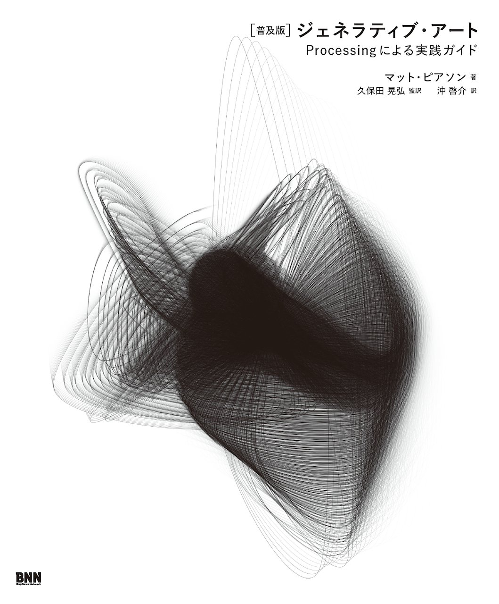

<!doctype html>
<html lang="en">
    <head>
        <meta charset="utf-8">
        <title>RevealJS : /Users/masahiromatsui/GoogleDrive/slides/slides-src/phics.md</title>
        <link rel="stylesheet" href="css/reveal.css">
        <link rel="stylesheet" href="css/theme/night.css" id="theme">
        
       
        <!-- For syntax highlighting -->
        <link rel="stylesheet" href="lib/css/darkula.css">

        

        <!-- If the query includes 'print-pdf', use the PDF print sheet -->
        <script>
          document.write( '<link rel="stylesheet" href="css/print/' + ( window.location.search.match( /print-pdf/gi ) ? 'pdf' : 'paper' ) + '.css" type="text/css" media="print">' );
        </script>

        <style type="text/css">
            @page {    
              margin: 0;
              size: auto; 
            }
        </style>

        <script>
         if(window.location.search.match( /print-pdf-now/gi )) {
           window.print();
         }
      </script>

    </head>
    <body>

        <div class="reveal">
            <div class="slides"><section  data-markdown><script type="text/template">
# Phics

#### Graphics Generation Service.

<small>Created by [Masahiro Matsui](https://tech-navy.tech)</small>
<div style='display:inline-block;'>
<p>Service</p>
<a rel='nofollow' href='https://phics.tech-navy.tech' style='cursor:default;'></a>
</div>
<div style='display:inline-block;'>
<p>Slide</p>
<a rel='nofollow' href='https://matts966.github.io/slides/slides-src/phics-export/' style='cursor:default'></a>
</div>

<aside class="notes"><p>最初のページ。URLのバーコードがあるので画面を長めに表示しておく。</p>
</aside></script></section><section  data-markdown><script type="text/template">
## 目次

1. [アプリケーション概要](#/2) 
2. [ジェネラティブアートとは](#/3)
3. [サーバー側実装](#/4)
4. [クライアント側実装](#/5)
5. [環境構築&Deploy自動化](#/6)
6. [反省点](#/7)
7. [今後の課題](#/8)
8. [参考文献](#/9)
</script></section><section  data-markdown><script type="text/template">
## アプリケーション概要

- ユーザーはログイン後、裏返しのカードを配られる。

- タップすることで、カードを裏返すことができ、オモテ面にはジェネラティブアートが表示される。

- ボタンを押すことで、画像を保存することができる。
</script></section><section  data-markdown><script type="text/template">
### ジェネラティブアートとは


</script></section><section ><section data-markdown><script type="text/template">
## サーバー側実装

- Nginx
- Rails 5.2.1
- Ruby 2.3.7
- Webpacker
- devise
- react-rails
</script></section><section data-markdown><script type="text/template">
## サーバー側実装

- サブドメインでの運用（DNS,VPNのプロバイダでの設定 ＋ Nginxでのポートフォワーディング）。
- Webpacker でクライアント側のコンパイル。
- devise でユーザ認証。omniauth によるGoogle認証を実装（選択肢が多いと逆に迷って面倒という実体験と、管理の手軽さから一つに絞った）。
- react-rails で rails 側のデータを React クライアント側に渡す。
</script></section><section data-markdown><script type="text/template">
## Webpacker問題

- Webpackerがログを吐かずに落ちる問題
- その他の面倒ごと
- 最新版webpackへの対応の遅れ
</script></section></section><section ><section data-markdown><script type="text/template">
## クライアント側実装

- React.js 16.7.0-alpha.0
- React P5Wrapper
- Material UI 3.7.1
</script></section><section data-markdown><script type="text/template">
### P5Wrapper でのReactっぽいデータハンドリング

```Javascript
p.setup = function () {
    p.myCustomRedrawAccordingToNewPropsHandler 
        = propsHandler(p, canvas);
}
```
</script></section></section><section ><section data-markdown><script type="text/template">
## 環境構築&Deploy自動化

- capistrano
- unicorn
- webpack-dev-server
- foreman
</script></section><section data-markdown><script type="text/template">
## デプロイフロー

1. `rails s` , `webpacker-dev-server`, をbundleで実行（foremanでまとめておく）、実装の最終確認。
2. 問題なければ`cap production deploy`でデプロイを実行。
3. 内部で`assets:precompile`, `webpacker:compile`を行い、unicornサーバの再起動。

3のタイミング、場所が問題となった。
</script></section><section data-markdown><script type="text/template">
## Webpacker問題

- WebpackerはWebpackの設定ファイルなどを隠蔽してくれる。yml表記で比較的簡易に設定可能。
- その結果いろいろ包まないといけないため、Permissionエラーやbundleのversion管理の問題などで高頻度でこける。
- `--trace` をかけてもログがまともに吐かれないことがある。
</script></section><section data-markdown><script type="text/template">
## Webpacker問題 

### どうするか？

- ローカルではログも出るし、あまりこけないことに気づく。
- ユーザーがデフォルトで `root` だったり、もともとsystemが `ruby 2.3.0` を酷使してるサーバだったので、先述の様な問題が出たと考えられる。

    → ローカルでコンパイルを通してしまえばいい。
    → その後`rsync`でファイル転送を行う `capistarano` タスクを定義して使う。

</script></section></section><section  data-markdown><script type="text/template">
## 反省点

- やりたいことに力点を置いた実装やライブラリの使用は効率よく進められたので、そういった方向に時間をもう少し使えればよかった。
- なんども行うデプロイは効率化しておこうと思った結果、そちらに時間を使い過ぎてしまった。
- 計画を全く立てずに作ったため、URLなどが雑。
- いろいろと間に合わず、認証の意味がないという残念な状態。
</script></section><section ><section data-markdown><script type="text/template">
## 今後の課題

- チケットシステム（これを入れないとログインの意味なし）
- Email Confirmation
- リセマラ対策用のアカウントsoft-delete（コンテンツの価値と量を上げないと意味なし）
- Saveボタンをカード回転後にrenderする（先にあっても意味ないので）
</script></section><section data-markdown><script type="text/template">
## 今後の課題

- 良いアプリ名を考える。
- GANモデルのアプリケーションへの取り込み(Ruby で書きたくないのでGAE/GOの予定)
- 実際のDBへの画像の保存（Saveボタンはカードを表に返してから出したい）
- ユーザーごとの所持画像一覧機能
- SNS share
</script></section><section data-markdown><script type="text/template">
## 今後の課題

- アイコン (& bugfix: apple icon not rendered)
- ~~PWA対応~~
- カードの種類増やす
- LP作る
- bugfix: 画面全体のクリックイベントで背景が暗くなる。
</script></section></section><section  data-markdown><script type="text/template">
## 参考文献

1. [普及版]ジェネラティブ・アート―Processingによる実践ガイド,　Matt Pearson (著), 久保田 晃弘 (監修), 沖 啓介 (翻訳), ビー・エヌ・エヌ新社, 2014/11

2. The Nature of Code (English Edition), Daniel Shiffman, Amazon Services International, Inc.

3. Processing Creative Coding and Generative Art in Processing 2, Greenberg, Ira, Xu, Dianna, Kumar, Deepak, Apress 2013</script></section></div>
        </div>

        <script src="lib/js/head.min.js"></script>
        <script src="js/reveal.js"></script>

        <script>
            function extend() {
              var target = {};
              for (var i = 0; i < arguments.length; i++) {
                var source = arguments[i];
                for (var key in source) {
                  if (source.hasOwnProperty(key)) {
                    target[key] = source[key];
                  }
                }
              }
              return target;
            }
            // Optional libraries used to extend on reveal.js
            var deps = [
              { src: 'lib/js/classList.js', condition: function() { return !document.body.classList; } },
              { src: 'plugin/markdown/marked.js', condition: function() { return !!document.querySelector('[data-markdown]'); } },
              { src: 'plugin/markdown/markdown.js', condition: function() { return !!document.querySelector('[data-markdown]'); } },
              { src: 'plugin/highlight/highlight.js', async: true, callback: function() { hljs.initHighlightingOnLoad(); } },
              { src: 'plugin/notes/notes.js', async: true, condition: function() { return !!document.body.classList; } },
              { src: 'plugin/math/math.js', async: true }
            ];
            // default options to init reveal.js
            var defaultOptions = {
              controls: true,
              progress: true,
              history: true,
              center: true,
              transition: 'default',
              dependencies: deps
            };
            // options from URL query string
            var queryOptions = Reveal.getQueryHash() || {};
            var options = {
  "notesSeparator": "note:",
  "separator": "^[\r\n?|\n]---[\r\n?|\n]$",
  "verticalSeparator": "^[\r\n?|\n]--[\r\n?|\n]$",
  "theme": "night",
  "highlightTheme": "darkula",
  "controls": true,
  "progress": true,
  "slideNumber": false,
  "history": true,
  "keyboard": true,
  "overview": true,
  "center": true,
  "touch": true,
  "loop": false,
  "rtl": false,
  "shuffle": false,
  "fragments": true,
  "embedded": false,
  "help": true,
  "showNotes": false,
  "autoSlide": 0,
  "autoSlideStoppable": true,
  "mouseWheel": false,
  "hideAddressBar": true,
  "previewLinks": true,
  "transition": "convex",
  "transitionSpeed": "default",
  "backgroundTransition": "convex",
  "viewDistance": 3,
  "parallaxBackgroundImage": "",
  "parallaxBackgroundSize": "",
  "parallaxBackgroundHorizontal": null,
  "parallaxBackgroundVertical": null,
  "slideExplorerEnabled": true,
  "browserPath": null,
  "attributes": ""
};
            options = extend(defaultOptions, options, queryOptions);
            Reveal.initialize(options);

        </script>
        
    </body>
</html>